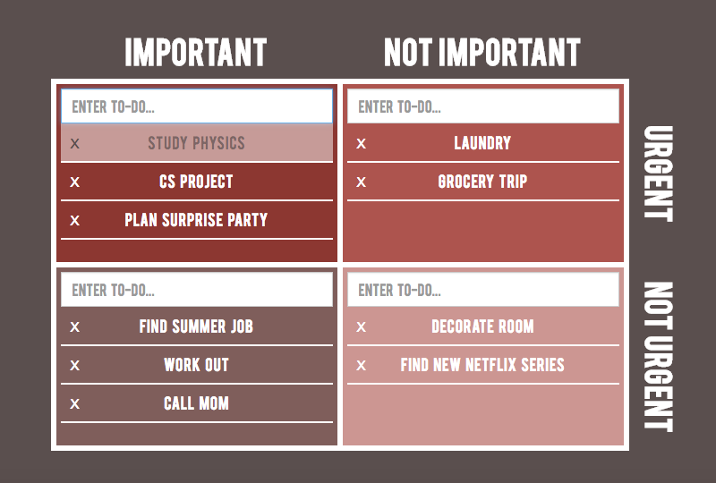

Get Your Prioritas Straight.
Prioritas is an organizational website designed to help users categorize and break up large projects into manageable chunks.
Scroll down to learn how to use Prioritas and the Pomodoro technique, or click above to register or log in!
Questions? Comments? Bugs? Please contact us at prioritas.CS50@gmail.com.
Using Prioritas
On the main page, Prioritas features a priority matrix for keeping track of to-dos according to their level of importance and urgency. Upon clicking on a task, an action window based on the Pomodoro technique pops up, featuring a timer and a field to input the number of desired work cycles to be completed.

Step 1: Add Tasks
Add tasks to the grid by typing in the appropriate text field and hitting enter. Top Left: important things you should do right away, Bottom Left: things you want to get to at some point, Top Right: pressing but trivial tasks, and Bottom Right: time-wasting, avoidable things.
Step 2: Set Pomodoros
Click on a task to see the Pomodoro pop-up window. At the bottom, you'll see a field with the number of Pomodoros to complete for the task. Type in the number of Pomodoros you'd like to spend working on each long-term project.
Step 3: Begin Work
Time to start work! Click on a task, hit the start button, and begin working for 25 minutes without pause.
Step 4: Take a Break
A bell will notify you when time is up and your 5-minute break begins. Another bell will sound when your break is over, and the number of remaining Pomodoros will automatically decrease.
Step 5: Keep Going!
The app will immediately begin another Pomodoro cycle, but feel free to switch tasks between Pomodoros to keep things interesting. Once you've completed a task, simply click the delete button to remove it from your list!

The Pomodoro Technique
The Pomodoro technique was invented by Francesco Cirillo and named after the tomato-shaped timer he originally used (hence, our logo!). It is a popular time-management strategy consisting of working on projects with intense focus for a block of time (usually 25 minutes), followed by a 5-minute break. Work periods are referred to as pomodoro sessions or simply pomodoros.
The technique helps keep your brain alert and motivated at all times, greatly increasing productivity. In addition, it can help make large projects or long work hours seem less formidable.